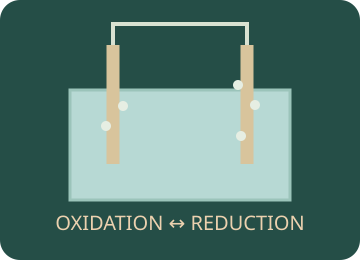

Redox
Track electrons from metal reactions to photographic images, electrolysis and industrial aluminium extraction.

Choose an investigation
Make a prediction, choose the conditions and use the apparatus on the bench. Drag equipment into place, turn switches and watch the reaction. Need a hand? Use Help with this step. Record your evidence before answering the explanation question.
Preparing your experiment…
Choose conditions Sample, quantities and equipment
Use the equipment directly on the bench. Drag, click or tap the highlighted apparatus.
Record and compare your observations.
Your notebook stays while you explore this page. Reloading clears it. Practical notes and lesson checks are not sent to the teacher.
Use the evidence
Connect the practical to the chemistry
Oxidation and reduction
Oxidation is electron loss and an increase in oxidation state. Reduction is electron gain and a decrease in oxidation state. In simple oxygen-transfer reactions, gaining oxygen is oxidation and losing oxygen is reduction.
Example. Zn → Zn²⁺ + 2e⁻ is oxidation. Cu²⁺ + 2e⁻ → Cu is reduction. Both changes occur in the same redox process.
Agents and balanced half-equations
The reducing agent donates electrons and is oxidised; the oxidising agent accepts electrons and is reduced. Balance atoms and charge, then multiply half-equations so the electron numbers cancel.
Example. 2Al → 2Al³⁺ + 6e⁻ and 2Fe³⁺ + 6e⁻ → 2Fe match the six-electron transfer in thermite.
What carries charge?
An external metal circuit carries charge through electrons. An electrolyte carries charge through moving ions. Solid ionic compounds do not conduct by ion migration, but molten or aqueous electrolytes can.
Example. Cations migrate to the negative cathode and anions to the positive anode in an electrolytic cell. Migration is not the same as electron transfer at the electrode surface.
Electrode rules
Reduction always occurs at the cathode and oxidation at the anode. For electrolysis, the power supply makes the cathode negative and anode positive. Electrode names describe the reaction; polarity differs in a galvanic cell.
Example. Molten PbBr₂: Pb²⁺ + 2e⁻ → Pb at the cathode; 2Br⁻ → Br₂ + 2e⁻ at the anode.
Aqueous solutions: water competes
Do not apply molten-salt rules to every aqueous solution. Water can be reduced to H₂ or oxidised to O₂. Ion concentration, electrode material and overpotential affect which reactions occur.
Example. Concentrated aqueous CuCl₂ with inert electrodes gives Cu at the cathode and usually Cl₂ at the anode; CuSO₄ with inert electrodes gives Cu and O₂. Copper anodes can dissolve instead.
Water electrolysis and gas tests
Acidified water with inert electrodes gives H₂ and O₂ in a 2:1 mole and volume ratio at equal temperature and pressure. Hydrogen gives a pop with a burning splint; oxygen relights a glowing splint. Carbon dioxide turns limewater milky.
Example. 2H₂O → 2H₂ + O₂. With the same charge, n(H₂) = Q/(2F) and n(O₂) = Q/(4F), assuming 100% current efficiency.
Aluminium extraction
Alumina is dissolved in molten cryolite. Cryolite lowers the required operating temperature compared with pure alumina. Aluminium forms at the cathode; carbon anodes react to form carbon oxides and need replacing.
Example. Al³⁺ + 3e⁻ → Al. In the ideal CO₂-only anode model, 2Al₂O₃ + 3C → 4Al + 3CO₂.
Photography and thermite
In silver-halide photography, exposure creates a latent image, development reduces silver ions to visible metallic silver, and fixing removes unexposed silver halide. Thermite is a separate highly exothermic oxygen-transfer redox reaction.
Example. 2Al + Fe₂O₃ → Al₂O₃ + 2Fe. Aluminium is oxidised; iron(III) is reduced. The photographic image forms by Ag⁺ gaining electrons, not by silver ions being oxidised.
Class practicals and further exploration
These activities follow the topics in your syllabus. Use the linked class sheets for your teacher’s practical instructions and reporting requirements. Virtual models complement teacher-supervised practical work.
Ready to test your understanding?
Choose from 80 questions on redox. Tick your areas and levels, practise with explanations or take a Test yourself quiz, then retry the questions you missed.